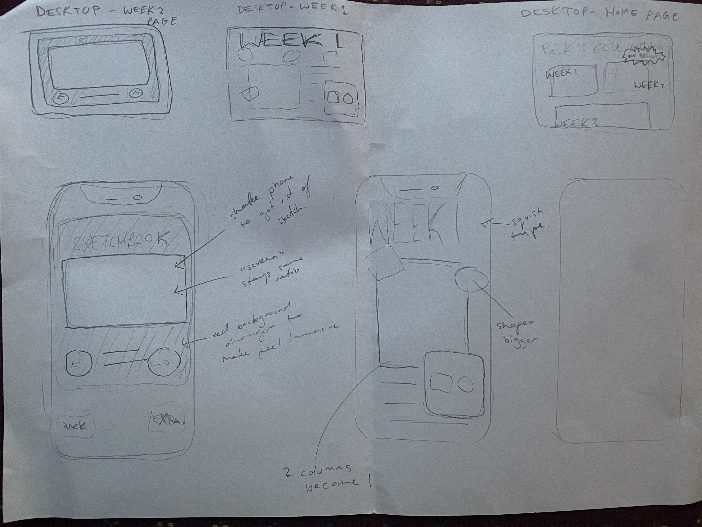
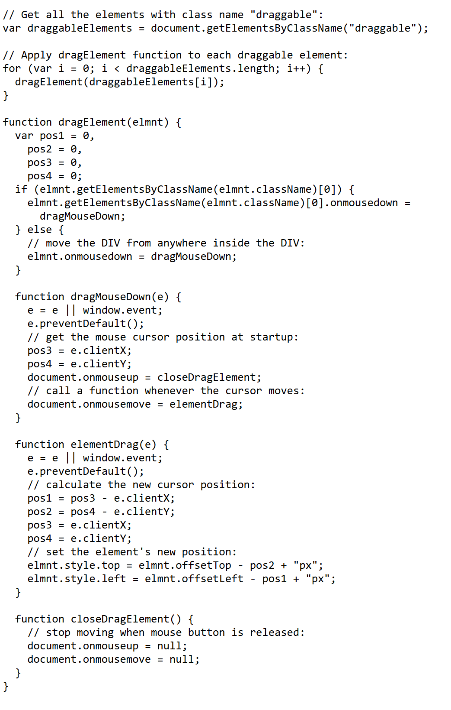
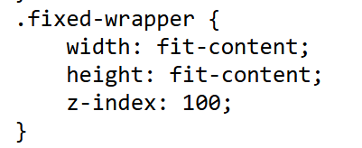
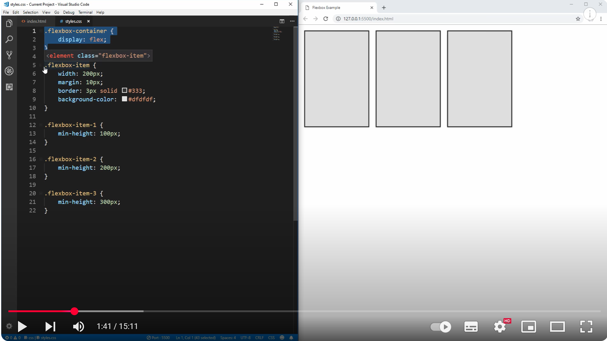

First attempt at thinking about how some of the pages may adapt to iphone
After running into a few problems trying to make elements on Week1 page draggable I ended up, Looking at Matilda's code really helped. I kept having problems just trying to insert it, so I made a separate index page to get the code right and then brought it back into my original
trial drag page
MatildasWorkbook
Flexbox has been one of the main tools I've been learning and experimenting to build my Workbook. This 15min youtube video linked by my tutors was particularly helpful and straightforward
Aa
I've chosen WorkSans as my main typeface across the Workbook. Mainly because I wanted a versatile typeface that felt a little like some of the early sans serif typefaces. I also wanted a variable font to play with in a web space, I haven't really done this that much yet, but hopefully in the coming weeks I can. It's also free which is rad.
I found giving divs a background colour really helpful for seeing how my code changes were affecting the layout
For Week 1 page, I was unable to get the dragged elements to disappear when 'placed' in box. Tried a few different ways but needs a little bit more time to nut it out. Struggling with how to target the space between the vertical letters on the home screen. In general would like to learn more typography specific css, a little frustrating not being able to easily control kerning etc. I'm missing inDesign a little bit How to get the latest popUp to be the one on top, as they all have a z-index?I need to add some naviagtional elements to my pages. Especially an easier way to close these pop-ups and a button to get back to the main Code Cat pageI have a feeling my code is quite messy and that I'm doing things not the most efficient way. But I've just kind of been learning a few things and then only using that